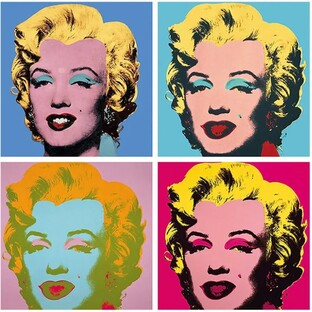
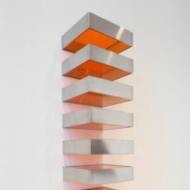
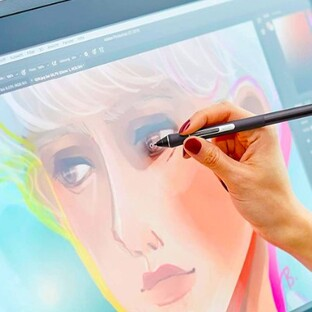
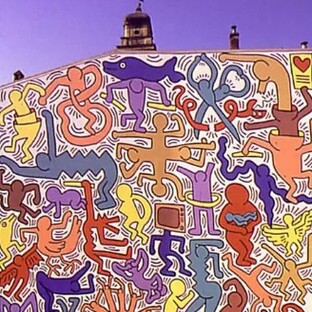

Corrientes Contemporáneas
Las corrientes contemporáneas son aquellas que se desarrollan desde mediados del siglo XX hasta la actualidad. Se caracterizan por ser muy variadas, innovadoras y por utilizar nuevas tecnologías. En estas corrientes, el arte ya no sigue reglas fijas y puede incluir ideas, conceptos, medios digitales y nuevas formas de interacción con el espectador.

Pop Art
XX
Movimiento que utiliza imágenes de la cultura popular como celebridades, productos comerciales y publicidad. Se caracteriza por colores llamativos, repetición de imágenes y un estilo visual impactante. Este tipo de arte busca acercar el arte a la vida cotidiana y cuestionar el consumo y la cultura de masas.
Arte conceptual
XX
En esta corriente, la idea o el concepto es más importante que la obra física. El valor del arte no está en lo visual, sino en el mensaje que transmite. Muchas veces las obras pueden parecer simples, pero tienen un significado profundo que invita a reflexiona

Minimalismo
XX
Se basa en la simplicidad, utilizando pocos elementos, formas básicas y colores neutros. Busca eliminar lo innecesario y centrarse en lo esencial. Este estilo transmite orden, equilibrio y tranquilidad visual.

Arte digital
XXI
Incluye el uso de tecnología como computadoras, animaciones, realidad virtual y NFTs. Es una de las formas más actuales de expresión artística. Permite la interacción con el espectador y el uso de nuevas herramientas digitales.

Arte urbano
XXI
Se desarrolla en espacios públicos como calles y edificios. Incluye grafiti y murales, y muchas veces transmite mensajes sociales, políticos o culturales. Este tipo de arte es accesible para todas las personas y forma parte del entorno urbano.